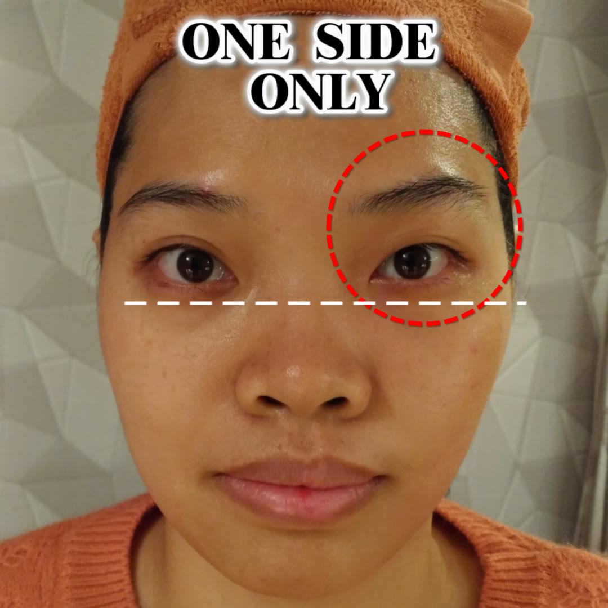

Free 3-minute video
One side was worked
for 5 minutes.
Can you tell which? Click play to unlock the exact 3-minute ‘Inner Brow Release’ — the technique behind this one-side result.
Erasing tiredness: the exact 3-minute reset to lift your brows and awaken your face — without Botox. Beginner-friendly self-care, no experience needed.
Lovely — your 3-minute reset is playing now. We’ve saved a copy to your inbox too. 🌿
100% Free & Secure. We hate spam too. · Beginner-friendly biomechanics — no rubbing, no skin pulling.
Join 1,000+ women learning gentle bojin at home — across Taiwan, Hong Kong & Malaysia.

So what did she do? · The 3-minute Inner Brow Release

In this free 3-minute video, you’ll see
- Where Technique #1 begins — the exact inner-brow point most people miss, shown up close.
- The featherlight angle and pressure a written guide can never quite show you.
- Why one side lifts and looks more awake in minutes — and how to do the same yourself.
- The release-first approach — why tension and puffiness have to be eased before anything else, so your effort stops working against you.
No tools. No experience. Just three gentle minutes at your own mirror.
Sound familiar?
You sleep a full night, and your eyes still look tired.
Puffy lids in the morning. Shadows that make you look worn out in photos. That heavy, done-by-noon feeling around the eyes — even when nothing’s wrong. After 40, thinner skin and slower overnight drainage let fluid pool and tension settle, so the eyes are usually the first place a tired face shows.
Here’s the part most people never see: so much of a “tired” face isn’t age at all — it’s tension and stagnant fluid held under the surface. That’s exactly what the one-side test shows. Creams sit on top of it. The right release reaches it.
In their words
I started at 52 with zero beauty experience. Within a few weeks my eyes looked brighter in the morning and, honestly, less tired. — Dana R.
The one-side thing sold me — I could actually see the difference before I even tried it. Now it’s my two-minute morning habit. — Carol T.
Individual experiences vary. This is gentle self-care, not medical treatment.

Who’s teaching you
Hi, I’m Yu-Ting Lan.
I’m an international bojin instructor and the founder of Héhé Studio. Over the past several years I’ve taught more than a thousand students across Taiwan, Hong Kong and Malaysia — complete beginners, grandmothers, and men included. This little video is the gentlest possible place to start.
A few quick questions
Do I need any special tools?
No. The reset in this video uses only your hands. A smooth bojin tool is lovely later, but you don’t need one to start.
Is this suitable if I’ve never done anything like this?
Yes — it’s designed for complete beginners. Everything is featherlight and slow, with no rubbing and no skin pulling.
How long until I see a difference?
Many people feel their eyes look a little brighter and less puffy the same morning. It’s gentle self-care, so results vary and build with a regular, easy habit.
Is it safe?
It’s a gentle, low-pressure routine. It isn’t medical treatment — if you have a skin or health condition, check with your doctor first.
Start tonight
See the technique behind
the one-side result.
Enter your email and the free 3-minute video unlocks right here to watch.
Lovely — scroll up, your 3-minute reset is playing. 🌿
100% Free & Secure. We hate spam too. · For self-care and educational purposes only. Not medical advice, diagnosis, or treatment.